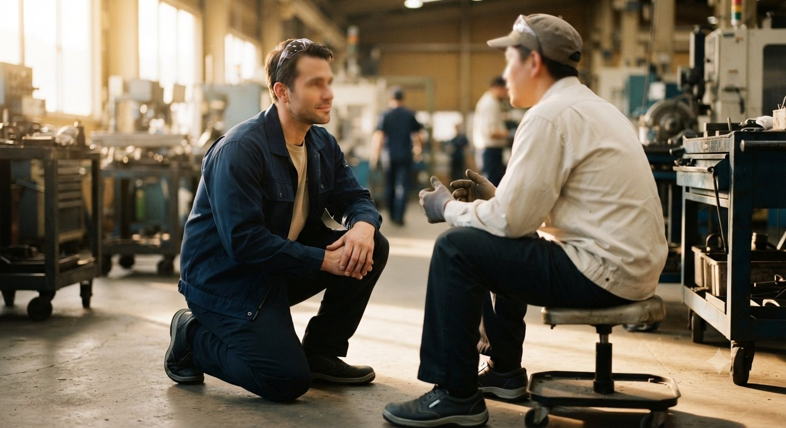
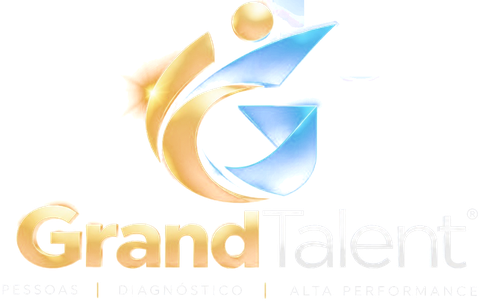

Você sabe onde sua liderança está custando performance à operação?
A GrandTalent mede engajamento, liderança, talentos e prontidão para mudança para mostrar onde a operação está perdendo força e o que precisa ser corrigido primeiro.
Diagnóstico baseado em dados. Intervenção direcionada. Acompanhamento do resultado.
Primeira leitura gratuita em 2 minutos

Se um colaborador contasse hoje, sem filtro, como é trabalhar na sua empresa — o que ele diria?
Na maioria das operações, essa resposta já existe — em conversas de corredor, em pedidos de demissão, em indicadores que pioram sem explicação. O que costuma faltar não é pesquisa. É transformar o que as pessoas percebem e relatam em informação que possa ser:
Quanto os problemas de pessoas podem estar custando à sua operação?
Turnover, absenteísmo, retrabalho, acidentes e perda de produtividade deixam rastros financeiros. Faça uma estimativa inicial em poucos minutos.
- Turnover custo de reposição
- Absenteísmo horas perdidas
- Retrabalho qualidade
- Acidentes segurança
- Produtividade ritmo da operação
Uma estimativa. O diagnóstico mostra onde agir.
Todo board sabe o custo de uma parada de linha. Poucos sabem o custo de uma liderança que não sustenta engajamento.
O problema aparece no resultado. A causa costuma aparecer antes nas pessoas.
É aí que entra o Sistema 4.0.
Cinco instrumentos. Um único diagnóstico da operação.
- MedirEngajamento real da operação
- LocalizarÁrea · turno · liderança · grupo
- CompreenderTalentos, dinâmica e causa
- IntervirLiderança e comunicação, onde o dado aponta
- AcompanharAdesão à mudança e reavaliação
Diagnóstico antes da intervenção. Nenhum treinamento é proposto antes de saber onde está o problema, qual sua dimensão e quais grupos são mais afetados.
Complementa o que a empresa já tem. Pesquisas de clima, indicadores e avaliações existentes entram no diagnóstico. O objetivo é entender o que os dados atuais ainda não estão mostrando.
Operações com muitas pessoas, turnos e níveis de liderança.
Produção · Automotivo · Metalurgia · Alimentos · Calçados
Transporte · Frotas · Centros de Distribuição · Supply Chain · Última milha
Construção · Agroindústria · Energia · Operações de campo
Do chão de fábrica à diretoria, o diagnóstico acompanha a estrutura real da operação.
Experiência prática + desenvolvimento acadêmico.
A base conceitual do Sistema 4.0 foi desenvolvida em uma pós-graduação em Comunicação Estratégica e Gestão de Marca e Reputação pela PUCRS, tendo a Mercedes-Benz do Brasil como estudo de caso. O trabalho propôs o IBEP-4.0 e o PLH-4.0 como instrumentos.
Você não precisa contratar toda a jornada.
Cada etapa existe para responder a uma pergunta diferente.
O que o chão de fábrica ensina antes dos livros.
Tenerife, 1977: o caso que todo líder de operação deveria estudar
O maior acidente da aviação civil não foi causado por falha técnica, mas por silêncio hierárquico.
Por que reputação se constrói de dentro pra fora
O que o estudo sobre a Mercedes-Benz do Brasil mostra sobre engajamento interno e imagem corporativa.
Onde a mudança trava
Consciência não é adesão, e adesão não é capacidade. Por que confundir essas etapas trava a mudança.
Uma conversa de 30 minutos para entender sua operação.

- Entendemos o contexto.Resposta inicial em até 24 horas úteis.
- Conversamos por 30 minutos.Sem compromisso e sem apresentação comercial interminável.
- Definimos o próximo passo.Se houver aderência, você recebe uma proposta de diagnóstico adequada à operação.